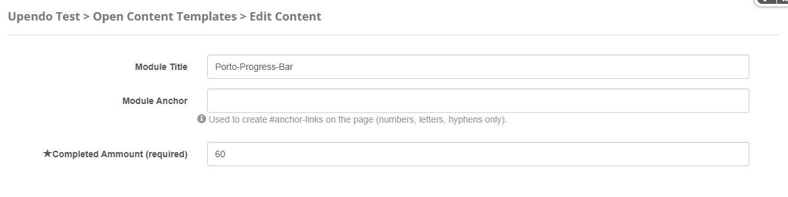
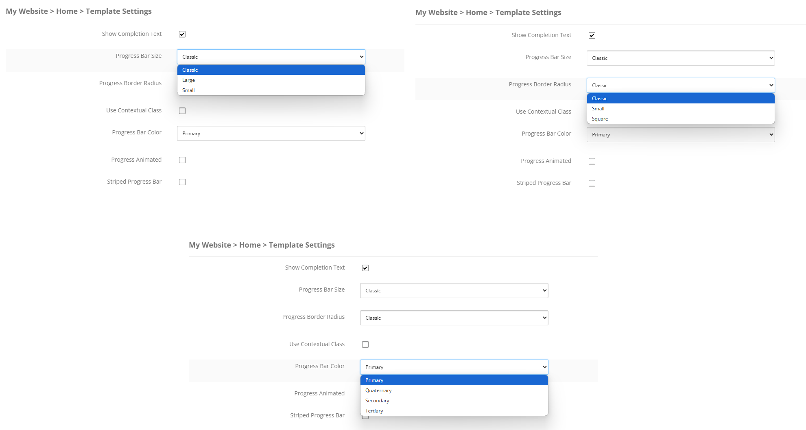
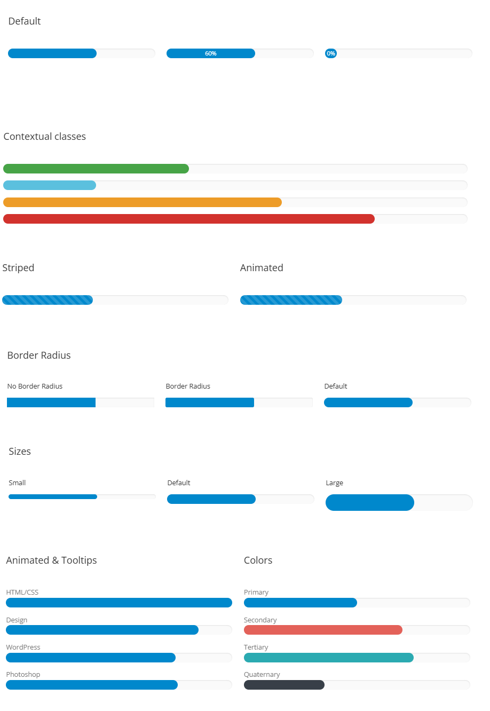

Porto-Progress-Bar Documentation
Overview
The Porto-Progress-Bar component allows you to create customizable progress bars with various styles, animations, and contextual classes. This component is highly flexible and integrates seamlessly with OpenContent.
For more details, check out the Porto-Progress-Bar repository on GitHub or the Porto documentation.
Usage Example
Properties
| Property | Data Type | Description |
|---|---|---|
| CompletedAmmount | Number | The percentage of the progress bar that is completed. This field is required. |
Settings Properties
| Property | Data Type | Description |
|---|---|---|
| ShowCompletionText | Boolean | Specifies whether to display the completion percentage as text inside the progress bar. |
| UseTooltip | Boolean | Specifies whether to display the completion percentage as a tooltip. |
| ProgressBarSize | String | Defines the size of the progress bar. Options include Small, Classic,
and Large. |
| ProgressBorderRadius | String | Defines the border radius of the progress bar. Options include Small,
Classic, and Square. |
| ApplyContextualClass | Boolean | Specifies whether to apply a contextual class to the progress bar. |
| ContextualClassType | String | Defines the contextual class type. Options include Success, Info,
Warning, and Danger. |
| ProgressColor | String | Defines the color of the progress bar. Options include Primary,
Secondary, Tertiary, and Quaternary. |
| ProgressAnimated | Boolean | Specifies whether the progress bar should be animated. |
| AnimationDelay | String | Defines the delay for the animation in milliseconds. Options include 0ms,
300ms, 600ms, 900ms, and 1200ms. |
| Striped | Boolean | Specifies whether the progress bar should have a striped style. |
| StripedAnimated | Boolean | Specifies whether the striped progress bar should be animated. |
Views
Below is an example of how the progress bar component is rendered:
Notes
Note: Ensure that the CompletedAmmount field is set correctly to display
the desired progress. Additionally, verify that the Settings Properties match your design
requirements.